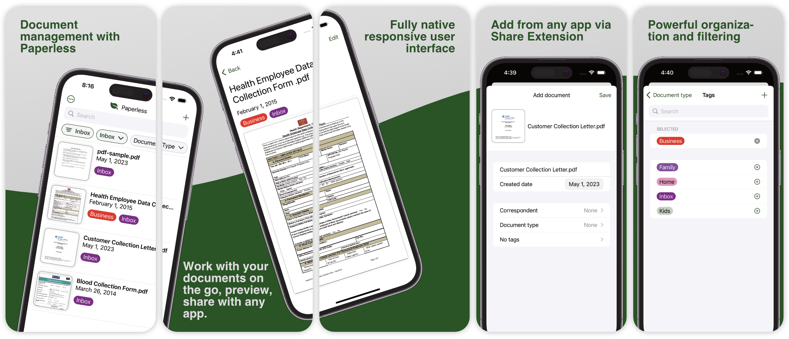

SwiftPaperless is a native iOS app that interacts with the popular
Paperless-NGX document management software. Paperless-NGX is
self-hosted, and therefore fully privacy preserving: you control your
data!
With SwiftPaperless, it's easy to find, categorize and also add
documents from your phone!
